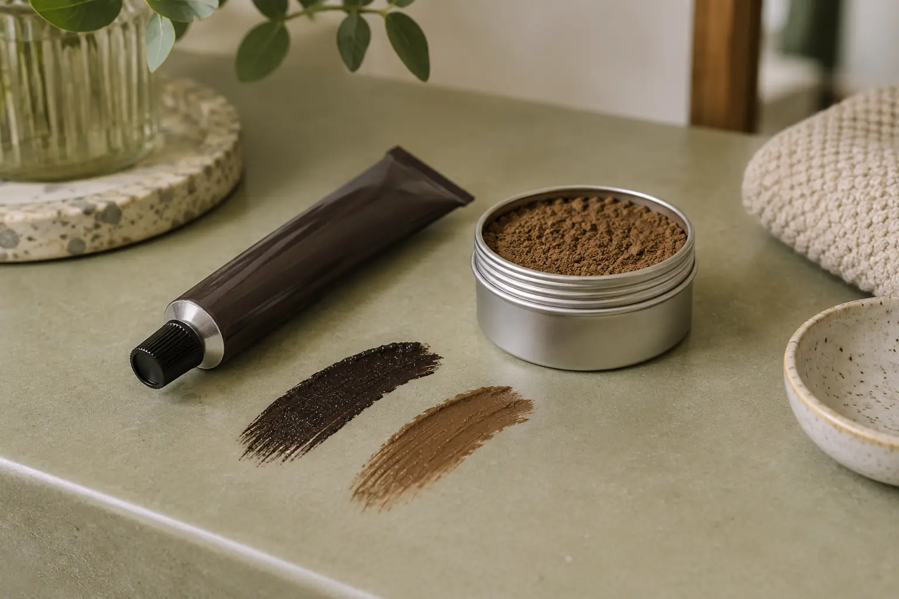

Antakių dažai ir henna: ką lyginti renkantis pasiūlymą?
Autorius: Madbeauty redakcija · Numatyta 2026 m. gruodžio 18 d. 10:00 (Lietuvos laiku)
Lyginkite konkretų produktą, norimą spalvos rezultatą ir į paslaugą įtrauktus darbus. Dviejų gaminių pavyzdžiai parodo, kodėl vien pavadinimo „henna“ ar „dažai“ nepakanka.

Antakių dažus ir henna verta lyginti pagal konkretaus produkto informaciją, norimą plaukelių ar odos spalvos rezultatą ir paslaugos paketą. Pavyzdžiui, „RefectoCil Natural Brown No. 3“ dažas naudojamas su atskiru oksidantu, o „Brow Code Henna Kit“ sudėtyje nurodyti Lawsonia lapų milteliai ir kitos medžiagos. Tai dviejų konkrečių produktų pavyzdžiai, ne visų dažų ar henna sistemų aprašymas.
Ką rodo konkrečių produktų informacija?
Gamintojo aprašyme „RefectoCil Natural Brown No. 3“ įvardytas kaip antakiams ir blakstienoms skirtas dažas, kuriam naudojamas atskiras oksidantas. Šio konkretaus atspalvio sudėties sąraše nurodyti Toluene-2,5-Diamine ir m-Aminophenol. Tai informacija apie šį produktą, o ne apie visus antakių dažus. Peržiūrėti „RefectoCil Natural Brown No. 3“ produkto informaciją.
„Brow Code Henna Kit“ aprašyme minimi Lawsonia Inermis lapų milteliai ir kitos sudedamosios dalys; kai kurių nurodytų atspalvių sudėties sąraše yra P-Phenylenediamine (PPD). Gamintojas aprašo šio produkto plaukelių ir odos spalvinimą. Vadinasi, vien žodis „henna“ neįrodo, kad konkrečiame rinkinyje yra tik augaliniai milteliai ar kad jis hipoalerginis. Šis pavyzdys taip pat neapibrėžia visų henna produktų sudėties. Peržiūrėti „Brow Code Henna Kit“ gamintojo informaciją.
Palyginkite rezultatą ir paslaugos apimtį
Prie kiekvieno pasiūlymo pasižymėkite tris dalykus:
- Produktas: tikslus pavadinimas ir ar pateikiama konkreti gamintojo informacija. Etiketė „dažai“ ar „henna“ pati savaime sudėties nepaaiškina.
- Spalvos rezultatas: ar aprašyme nurodyta, ar spalvinami plaukeliai, oda, ar abi sritys, ir kokio rezultato siekiama.
- Paslaugos paketas: ar į kainą įeina tik dažymas, ar ir antakių formos korekcija, laminavimas arba kiti darbai. Atskirai pasižiūrėkite, kokia konkretaus produkto ar paslaugos priežiūros instrukcija pateikiama.
Pavyzdžiui, jei norite spalvinti plaukelius, bet pasiūlyme neaišku, ar spalva tepama ir ant odos, iš pavadinimo „henna“ atsakymo nenustatysite. Pirmiausia lyginkite produkto informaciją ir nurodytą rezultatą; tada tikrinkite, ar abiejų paslaugų paketas apima tuos pačius darbus. Produkto aprašymas savaime nepatvirtina, ar jis tinka konkrečiam žmogui.
Kainą lyginkite tik pagal vienodą darbų apimtį
2026 m. spalio 9 d. peržiūrėtame „Laminuota Brows&Lashes“ meniu antakių korekcija nurodyta kaip 30 min. paslauga už 10 Eur, o korekcija su dažymu – 40 min. už 17 Eur. Laminavimas su dažymu ir korekcija pateiktas atskirai: 60 min. už 25 Eur. Tai vieno meniu pavyzdžiai, ne Lietuvos kainų vidurkis. „Laminuota Brows&Lashes“ meniu.
Tą pačią dieną peržiūrėtame Kauno „MILONA“ meniu antakių korekcija su dažymu nurodyta kaip 40 min. paslauga už 20 Eur; pridėjus blakstienų dažymą – 50 min. už 26 Eur. Šie konkrečių pasiūlymų pavyzdžiai rodo, kodėl vien produkto pavadinimo ar kainos nepakanka: kartu reikia palyginti trukmę ir įtrauktus darbus. „MILONA“ meniu.
Pasirinkite kategoriją, tada miestą
Madbeauty kataloge pradėkite nuo nacionalinės kategorijos „Antakiai“, o jei ieškote paslaugos konkrečioje vietovėje, miestą pasirinkite atskirai. Kategorijos pasirinkimas savaime nepatvirtina, kad toje vietovėje yra teikėjų ar laisvų laikų.
Procedūrų aprašai kataloge: Antakių dažymas dažais, Antakių dažymas chna. Miestą ir realaus teikėjo pasiūlymą pasirinkite kataloge, kai tokia pasiūla pateikta.
Susiję gidai
Šaltiniai
- Laminuota Brows&Lashes · komponentai · www.treatwell.lt
- Leila · laminavimo ir priauginimo variantai · www.treatwell.lt
- MILONA · antakiai ir blakstienos Kaune · www.treatwell.lt
- Brow Code: konkrečios henna formulės sudėtis · browcode.co
- RefectoCil: konkretaus antakių dažo produkto informacija · www.refectocil.co.za